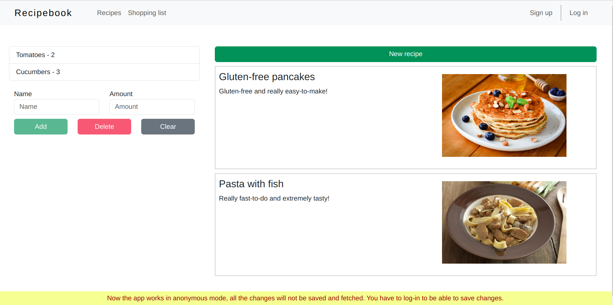
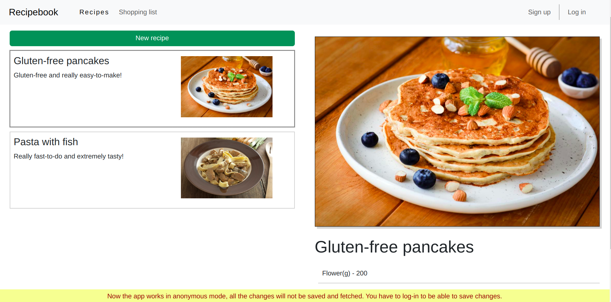
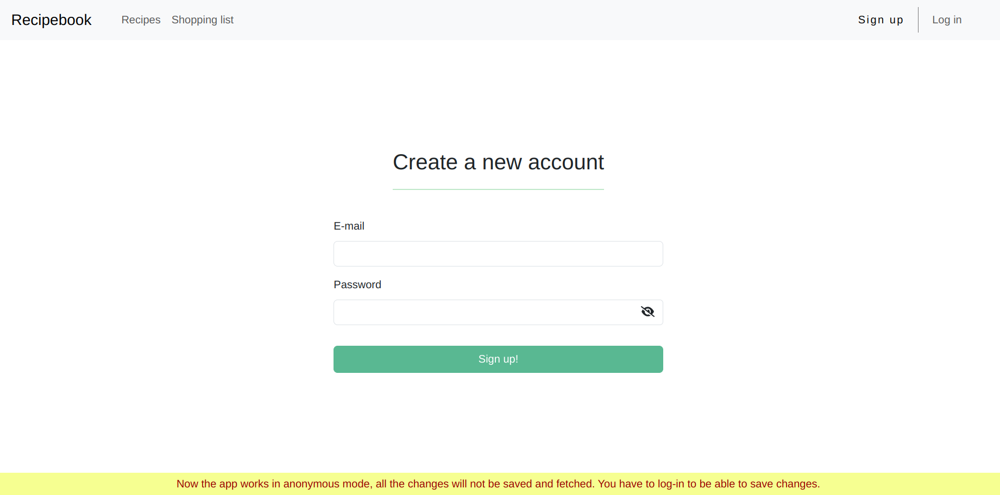

<div class="eco-cont container-fluid">
  <div class="row">
    <div class="col-12 images-cont">
      @switch(carouselSlide){
        @case(1) {
          <div class="img-cont img-1-cont">
            
          </div>
        }
        @case(2) {
          <div class="img-cont img-2-cont">
            
          </div>
        }
        @case(3) {
          <div class="img-cont img-3-cont">
            
          </div>
        }
      }
      <div class="arrows-cont">
        <a class="arrow-left" (click)="changeSlide(false)"><fa-icon [icon]="arrowLeftIcon"></fa-icon></a>
        <div class="count-cont">
          <span class="slide-count">{{ carouselSlide }}/3</span>
        </div>
        <a class="arrow-right" (click)="changeSlide(true)"><fa-icon [icon]="arrowRightIcon"></fa-icon></a>
      </div>
    </div>
    <div class="col-12 descr-cont">
      <p class="descr-text">
        I'm glad to introduce you the result of my really diligent work on angular basic knowledge:
        course project, some kind of recipe book, with all the functionality working.
        It contains everything I know about angular: components structure, modularity, routing,
        services, directives (who uses them lol) etc. I also used FireBase features here, as well as
        a little of RxJS lib. Yeah, it looks a little awful, because I was focused on functionality,
        but it's still a real project with a plenty of effort applied to the final result.
        <br>
        Every my project is open source, so you can see all the code on my GitHub.
      </p>
    </div>
    <div class="col-12 last-block">
      <a class="accent-button" href="https://github.com/KaKKaDu/ang-main-project" target="_blank">
        Go to GitHub
      </a>
    </div>
    <div class="margin-block">

    </div>
  </div>
</div>

